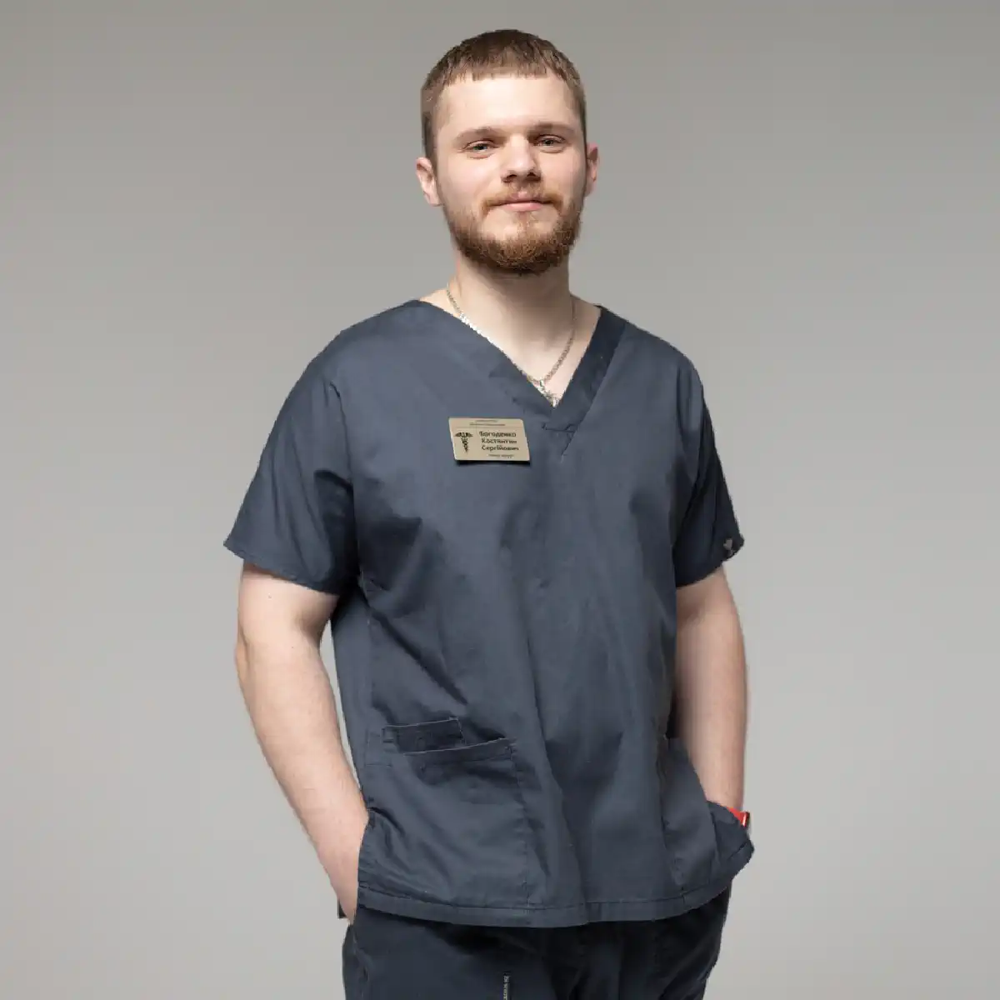

+38(068) 79 72 782
+38(068) 79 72 782Скорая наркологическая помощь Одесса
Мы рядом, когда каждый момент на счету


Бесплатная консультация, работаем круглосуточно 24/7
Мы рядом, когда каждый момент на счету

Наркологическая помощь в экстренных ситуациях — это неотложное вмешательство, которое требует профессионализма и быстроты. В Одессе скорая наркологическая помощь оказывает необходимую помощь пациентам, оказавшимся в критическом состоянии из-за алкогольной или наркотической интоксикации, а также при других острых состояниях, связанных с зависимостью. Это не просто спасение жизни, но и ключевая первичная помощь, которая становится важным шагом на пути к восстановлению здоровья и дальнейшему лечению.
В таких ситуациях каждое мгновение на счету. Алкогольная или наркотическая интоксикация могут быть крайне опасными, и для их успешного лечения требуется не только правильно подобранная терапия, но и оперативные действия, которые помогут минимизировать риски и снизить угрозу для жизни. Скорая наркологическая помощь в Одессе предоставляет пациентам квалифицированную медицинскую помощь в максимально короткие сроки, с учетом всех специфических особенностей зависимости и состояния пациента.
Врачи наркологи, оснащенные всем необходимым оборудованием, приезжают на место вызова, где они могут оценить состояние пациента, принять решение о необходимости дальнейшего лечения и, в случае необходимости, транспортивировать пациента в медицинское учреждение для более углубленной терапии. Важно отметить, что наркологическая помощь может включать как физическое, так и психологическое восстановление, так как зависимость не ограничивается только физическими симптомами. Эмоциональное и психологическое состояние пациента также требуют внимания, что делает наркологическое вмешательство особенно важным в такие моменты.
Экстренные вызовы часто требуют комплексного подхода: не только применение медикаментозных препаратов для детоксикации, но и восстановление водно-электролитного баланса, нормализация функций сердца и нервной системы, а также поддержка психоэмоционального состояния пациента. Именно такой всесторонний подход помогает не только стабилизировать состояние, но и создать условия для дальнейшего успешного лечения и реабилитации.
Скорая наркологическая помощь включает в себя несколько ключевых этапов, которые направлены на обеспечение безопасности пациента и предотвращение развития серьёзных осложнений. Каждый этап важен, так как только комплексное воздействие может обеспечить эффективное лечение и стабилизацию состояния пациента.
Во-первых, первым шагом является диагностика состояния пациента. Нарколог проводит тщательную оценку симптомов интоксикации, определяя степень тяжести состояния. Это включает в себя сбор анамнеза (например, как долго длится запой или когда был принят наркотик), а также проведение необходимых медицинских исследований, таких как измерение уровня алкоголя или наркотика в крови. Диагностика позволяет врачу точно определить, с каким видом интоксикации сталкивается пациент, и разработать индивидуальный план лечения.
Во-вторых, после диагностики начинается непосредственно медицинская помощь, которая направлена на стабилизацию состояния пациента. Один из ключевых этапов — это детоксикация. Процесс очищения организма от токсинов и продуктов распада алкоголя или наркотиков критически важен для восстановления здоровья пациента. Для этого вводятся инфузионные растворы, которые способствуют выведению токсинов, а также поддержанию нормального уровня жидкости и солей в организме. Это помогает избежать обезвоживания и нарушения баланса электролитов. Важным этапом является восстановление водно-электролитного баланса. Алкоголь и наркотики могут значительно нарушать нормальные функции организма, в том числе влиять на работу почек, сердца и нервной системы. Восстановление водно-электролитного баланса помогает предотвратить такие серьёзные осложнения, как нарушение артериального давления, тахикардию или аритмию.
В случае необходимости, наркологическая помощь включает лечение сопутствующих заболеваний. Зависимость от алкоголя или наркотиков может вызвать или усугубить различные заболевания внутренних органов, таких как печень, сердце, почки, и нервная система. Врач может назначить дополнительные препараты для поддержания работы этих органов и устранения острых симптомов, например, антигипертензивные средства для стабилизации давления или кардиопротекторы для защиты сердца. Наркологическая помощь включает в себя мониторинг состояния пациента до полного стабилизирования. Это означает, что врач не покидает пациента, пока его состояние не станет стабильным. В течение этого времени пациента постоянно наблюдают, проверяют его физиологические показатели (давление, пульс, дыхание), а также следят за возможными изменениями в состоянии сознания. Это необходимо для предотвращения любых неожиданных осложнений, таких как приступы, кома или развитие острых психозов.
Скорая наркологическая помощь — это не только неотложное вмешательство, но и тщательный процесс, включающий диагностику, лечение и непрерывный мониторинг состояния пациента до полного восстановления. Это важный шаг на пути к выздоровлению и предотвращению долгосрочных последствий зависимости.
В случае острого алкогольного или наркотического отравления не всегда возможно или безопасно транспортировать пациента в клинику. Порой состояние пациента настолько критическое, что перемещение его в медицинское учреждение может только ухудшить его состояние, создавая дополнительные риски. В таких случаях вызов нарколога на дом в Одессе становится оптимальным решением. Это особенно важно, когда время играет решающую роль, и каждое мгновение может повлиять на исход лечения.
Когда нарколог приезжает на место, он проводит тщательную диагностику состояния пациента, сразу же определяя степень тяжести отравления и назначая соответствующие меры. В отличие от транспортировки в клинику, медицинская помощь на дому позволяет избежать лишних стрессов и перенапряжений, которые могут усугубить состояние пациента. В процессе лечения пациент остается в знакомой обстановке, что способствует более быстрому восстановлению.
Кроме того, вызов нарколога на дом снижает риски, связанные с транспортировкой, такие как ухудшение самочувствия пациента в пути или возникновение осложнений, особенно в условиях сильной интоксикации. Профессиональный нарколог, приехавший по вызову, может сразу же приступить к оказанию экстренной помощи, используя все необходимые препараты и медицинское оборудование, которое обычно имеется при выезде наркологической бригады. Это также обеспечивает более высокую степень конфиденциальности, что немаловажно для многих пациентов, которые могут стесняться быть замеченными в медицинских учреждениях. Наркологическая помощь на дому позволяет сохранить полную анонимность, обеспечивая тем самым комфорт и доверие пациента.
Лечение алкогольной интоксикации начинается с тщательной оценки состояния пациента и диагностики. Врач оценивает общие симптомы интоксикации, такие как спутанность сознания, нарушение координации, изменения артериального давления, пульса, дыхания и другие физиологические показатели. Для более точной картины могут быть проведены анализы крови и мочи, которые помогают оценить уровень алкоголя и других токсинов в организме пациента. Эти данные позволяют врачу определить степень тяжести интоксикации и выбрать оптимальный план лечения.
Далее начинается процесс детоксикации, который является основным этапом в лечении алкогольной интоксикации. На этом этапе врач использует инфузионную терапию, то есть введение специальных растворов, которые помогают вывести алкоголь из организма. Инфузионные растворы, содержащие электролиты, витамины и другие необходимые вещества, способствуют нормализации обмена веществ, восстановлению водно-солевого баланса и ускорению вывода токсинов. Важным аспектом лечения является поддержка внутренних органов, особенно печени, почек и сердца, которые наиболее подвержены нагрузке при длительном злоупотреблении алкоголем. Для этого могут быть применены препараты, которые поддерживают работу печени и помогают восстанавливать её функции. Также в случае необходимости, врач может назначить препараты для нормализации работы почек, для предотвращения их перегрузки токсинами.
Дополнительно, лечение алкогольной интоксикации может включать препараты для стабилизации артериального давления и нормализации работы сердца. Алкогольная интоксикация может привести к резким колебаниям давления, тахикардии или аритмии, что может значительно осложнить состояние пациента. Для предотвращения этих осложнений врачи могут использовать препараты, которые помогают стабилизировать кровообращение, нормализовать пульс и снизить нагрузку на сердце. Кроме того, лечение алкогольной интоксикации включает поддержку нервной системы пациента. Алкоголь оказывает угнетающее влияние на центральную нервную систему, что может проявляться в виде сильной слабости, спутанности сознания, тревожности или депрессии. В таких случаях могут быть назначены препараты, нормализующие нейрохимические процессы, а также успокаивающие средства для улучшения психоэмоционального состояния пациента.
При наркотической интоксикации важен быстрый, точный и профессиональный подход, поскольку это состояние может быть крайне опасным для жизни пациента. Первый этап лечения — это первичная диагностика, которая включает в себя тщательное обследование пациента и анализ его состояния. Врач определяет тип наркотика, который был принят, а также степень отравления, чтобы понять, насколько сильно он воздействует на организм. Иногда может понадобиться анализ крови или других биологических жидкостей, чтобы выявить конкретные вещества, попавшие в организм, и оценить их концентрацию.
После диагностики начинается процесс детоксикации — выведение токсинов из организма. На этом этапе пациенту вводят инфузионные растворы, которые помогают ускорить выведение наркотических веществ и восстановить нормальный водно-солевой баланс. Это особенно важно, так как наркотики часто нарушают обмен веществ и могут вызвать серьезные нарушения в работе жизненно важных органов. Применяются также детоксикационные средства, которые способствуют очищению организма и предотвращают дальнейшее накопление токсинов. Одним из ключевых аспектов при наркотической интоксикации является стабилизация дыхания, нормализация давления и поддержание работы сердца. Наркотики могут воздействовать на дыхательную и сердечно-сосудистую системы, что приводит к проблемам с дыханием, снижению артериального давления и нарушению ритма сердца. Для стабилизации этих функций врачи используют медикаменты, которые поддерживают нормальную работу сердца и легких. Это важно для предотвращения таких серьезных осложнений, как гипоксия, аритмия или остановка дыхания.
Кроме того, лечение наркотической интоксикации требует постоянного мониторинга состояния пациента. Важно, чтобы медицинская помощь была предоставлена под контролем профессионала, так как состояние пациента может изменяться очень быстро, и в любой момент может возникнуть необходимость в корректировке терапии. Профессиональный нарколог контролирует все физиологические показатели, такие как частота сердечных сокращений, артериальное давление, уровень кислорода в крови, чтобы вовремя реагировать на любые изменения в состоянии пациента и предотвратить осложнения. Поскольку наркотическая интоксикация может привести к различным серьёзным последствиям для здоровья, лечение должно быть комплексным и включать не только медикаментозную терапию, но и постоянную поддержку всех систем организма пациента. Такой подход позволяет минимизировать риски для жизни пациента, стабилизировать его состояние и создать основу для дальнейшего восстановления и реабилитации.
Обычно врач-нарколог приезжает на дом в течение 20-40 минут после вызова. Время ожидания может зависеть от нескольких факторов, включая местоположение пациента и текущую загруженность наркологов. Однако важно отметить, что в экстренных ситуациях, когда угроза для жизни пациента высока, наркологическая бригада приедет как можно быстрее. В таких случаях время ожидания минимизируется, чтобы как можно скорее оказать необходимую медицинскую помощь и предотвратить ухудшение состояния пациента.
Когда состояние пациента критично, каждая минута имеет значение. Поэтому наркологическая бригада всегда будет действовать оперативно, обеспечивая безопасность пациента до момента его стабилизации. Врач, прибывший на место, быстро оценивает состояние пациента, проводит диагностику и принимает решение о дальнейших мерах, включая назначение инфузионной терапии, стабилизацию работы сердечно-сосудистой системы и дыхания, а также контроль над общим состоянием пациента. Если требуется, нарколог может рекомендовать транспортировку в медицинское учреждение для дальнейшего лечения. Важно помнить, что экстренная наркологическая помощь проводится с учетом всех рисков и необходима для того, чтобы минимизировать последствия от интоксикации, восстановить физиологические процессы и предотвратить возможные осложнения.
Стоимость вызова скорой наркологической помощи в Одессе начинается от 2199 грн.
| Популярные услуги | Цена |
|---|---|
| Нарколог Одесса | От 2199 грн |
| Капельница от алкоголя | От 2199 грн |
| Вывод из запоя на дому | От 2199 грн |
| Кодирование от алкоголизма | От 6000 грн |
Наркологическую помощь нужно вызывать не только при острых интоксикациях, но и в ряде других ситуаций, которые могут угрожать здоровью пациента. Очень важно своевременно обратиться за помощью, чтобы предотвратить ухудшение состояния и предотвратить развитие серьезных осложнений. Вот основные случаи, когда нужно вызывать нарколога:
Своевременный вызов нарколога помогает избежать серьезных последствий, таких как необратимые изменения в организме, ухудшение психоэмоционального состояния, а также ускоряет процесс восстановления. Это важный шаг на пути к выздоровлению и преодолению зависимости.
Оказание наркологической помощи на дому имеет несколько ключевых преимуществ, которые делают этот метод лечения удобным и эффективным для пациентов, особенно в экстренных ситуациях:
Да, нарколога можно вызвать на дом в любое время суток, включая ночь. Наркологическая помощь в Одессе предоставляется круглосуточно, что особенно важно в экстренных ситуациях. В ночное время, как и в дневные часы, наркологическая бригада готова оперативно выехать на вызов, чтобы оказать необходимую медицинскую помощь. Это гарантирует, что пациент получит квалифицированную помощь в любое время, без задержек, что может сыграть решающую роль в стабилизации его состояния. Ночные вызовы не менее важны, чем дневные, так как иногда именно в ночное время могут происходить ухудшения состояния или острые интоксикации, требующие немедленного вмешательства. Поэтому круглосуточная доступность наркологической помощи в Одессе является важным преимуществом для обеспечения здоровья и безопасности пациентов.
Скорая наркологическая помощь в Одессе — это экстренный выезд квалифицированных специалистов, которые окажут помощь при острых состояниях, вызванных алкогольной или наркотической интоксикацией. Врач приедет на дом в кратчайшие сроки, проведет диагностику, предоставит неотложную помощь и при необходимости направит пациента в стационар. Важно, чтобы помощь была оказана как можно быстрее, так как от этого зависит здоровье и жизнь пациента.
Для экстренной наркологической помощи в Одессе можно вызвать специалиста по телефону: +38(050-021-69-57)

Да, мы строго соблюдаем полную конфиденциальность на всех этапах лечения. Информация о пациенте, диагнозе и прохождении терапии не передаётся третьим лицам. Обращение к нам не влечёт постановку на учёт. Вы можете быть уверены в безопасности и анонимности.
Программа лечения разрабатывается индивидуально после консультации со специалистом. Учитываются вид зависимости, её длительность, физическое и психологическое состояние пациента. Такой подход позволяет повысить эффективность терапии и снизить риск срыва. Мы не используем шаблонные решения.
Да, мы сопровождаем пациентов и после основного курса лечения. Проводятся консультации, рекомендации по адаптации и профилактике рецидивов. При необходимости возможна дальнейшая психологическая поддержка. Это помогает сохранить результат и вернуться к полноценной жизни.
Анонимно

Ну в хлопців просто золоті руки й світла голова, мене капали Олексій та Владислав, буквально за декілька сеансів я наче заново народився, до цього пив більше 3х тижнів, не міг зупинитись, дуже радий що знайшов саме цих спеціалістів, всім рекомендую
Анонимно
В течение нескольких лет я злоупотреблял алкоголь, что привело к увольнению с работы и вызвало у меня мысли о суициде. Понимая, что такой образ жизни неприемлем, я обратился за помощью в клинику “Амбрела”. Здесь я смог преодолеть свою зависимость от спиртного благодаря заботливым и опытным врачам, а также эффективной системе лечения. Спустя более года я полностью избавился от желания употреблять алкоголь, и теперь моя жизнь вернулась в норму. Я даже не приближаюсь к спиртному! Благодарю врачей клиники “Амбрела” за их помощь и заботу.
Анонимно
Я обращался за помощью в различные клиники, пытаясь избавиться от своей зависимости от алкоголя, но без особых успехов. Никак не мог справиться с желанием прибегнуть к бутылке, пока друг не посоветовал мне обратиться в центр “Амбрелла”. Я записался на прием и был поражен заботливым отношением к пациентам. Уже прошло два года, и теперь я смотрю на алкоголь с абсолютной равнодушием, активно занимаюсь спортом и улучшил отношения в семье. Благодаря центру “Амбрелла” моя жизнь была спасена от алкогольной зависимости!
Анонимно
Хочу выразить свою благодарность врачам из центра алкоголизма “Амбрела” за то, что они буквально спасли мою жизнь. В течение последнего года я сильно увлекался питьем, и все это привело к катастрофическим последствиям. Хотя я ходил на терапевтические сеансы, но безрезультатно. Тогда я нашел адрес клиники “Амбрела” в интернете, изучил отзывы и информацию о центре, и записался на прием. Там мне сразу предложили методику лечения, которая помогла не только справиться с физической ломкой, но и психической зависимостью от алкоголя. Не буду распространяться, скажу только одно - после пребывания в этой клинике я стал другим человеком, и навсегда забыл, что такое привкус алкоголя. Больше меня не тянет на это! Я искренне верю, что в центре “Амбрела” трудятся настоящие целители душ!
Анонимно
После сложного развода мой сын начал подавлять свою обиду и горе употреблением алкоголя. Он старался скрывать это от меня, но я, как мать, почувствовала, что что-то не так. В конечном итоге, ситуация стала критической. Моя знакомая посоветовала мне обратиться в клинику “Амбрела”. Я была приятно удивлена их работой! Они помогли сыну преодолеть очередной период злоупотребления алкоголем, и с тех пор прошел уже более года, и он совсем не пьет.
Анонимно
Благодаря вашей помощи, моя семья была спасена. Я с трудом уговорила мужа начать лечение, и последний каплей был пьяное ДТП. К счастью, в аварии никто не пострадал, но это был для него сигнал к действию. Он наконец согласился пройти курс лечения на дому, в стационар не хотел ложиться. Лечение было трудным, и были моменты, когда срыв был настолько близок, но благодаря вашему центру Амбрелла мы справились с этим.
Анонимно
Для меня эта клиника стала настоящим спасением! Долгое время я упорно отказывался от лечения, уверен был, что со мной все в порядке. Но к счастью, семья уговорила меня попробовать. И сегодня я чувствую себя невероятно счастливым, осознавая, что мне абсолютно не нужен алкоголь. Огромное спасибо за помощь и поддержку, которые я получил здесь! Я благодарен вам за новую возможность жить полноценной и счастливой жизнью!
Анонимно
Выражаю благодарность ребятам, которые оказали мне помощь и не отвернулись. Уже 10 месяцев я остаюсь чистой. Благодарю за то, что помогли найти новый путь в моей жизни.
Номер телефона:
+380 (68) 797 27 82
+380 (50) 021 69 57
Адрес наркологического центра вашего города уточняйте по
телефону
Работаем в: Киеве, Одессе, Львове, Харькове, Днепре,
Запорожье, Черкассах, Чугуеве, Черноморске, Каменском
Telegram: t.me/umbrellaplus
График работы: Круглосуточно